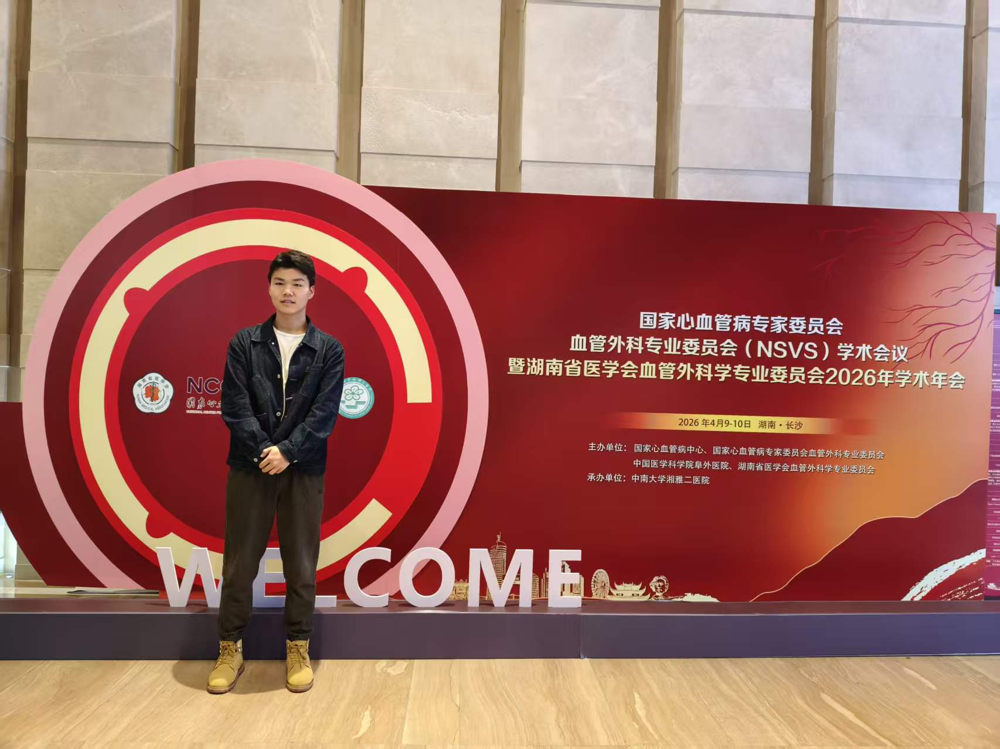

I am an undergraduate medical student interested in vascular surgery, surgical critical care, evidence-based medicine, clinical database research, and translational medicine.

My current academic exploration focuses on surgical diseases, evidence-based medicine, clinical prediction models, and computational molecular research. I am especially interested in connecting clinical questions with practical research methods.
This homepage is used as a concise academic profile. For more personal reflections and daily records, please visit my Chinese life blog.
A systematic review and meta-analysis focusing on hemodynamic selection bias and short-term mortality outcomes.
Vascular Surgery Meta-analysis Selection BiasA planned database study aiming to develop a dynamic prediction model for postoperative acute kidney injury in surgical ICU patients.
Surgical ICU AKI Prediction ModelA device innovation project focusing on post-procedural femoral artery compression, anti-displacement structure, and passive mechanical feedback.
Medical Device Hemostasis InnovationA computational project exploring inflammation-related molecular targets and candidate small molecules in abdominal aortic aneurysm.
Molecular Docking Molecular Dynamics AAA一篇医学生学习札记：从儿童发热的警惕性出发，整理小儿脑膜瘤、NF2、 MRI 序列和术前风险评估。
More research notes and learning records will be updated gradually.
GitHub: https://github.com/Bizhi-Wei
Email: 1184477688@qq.com